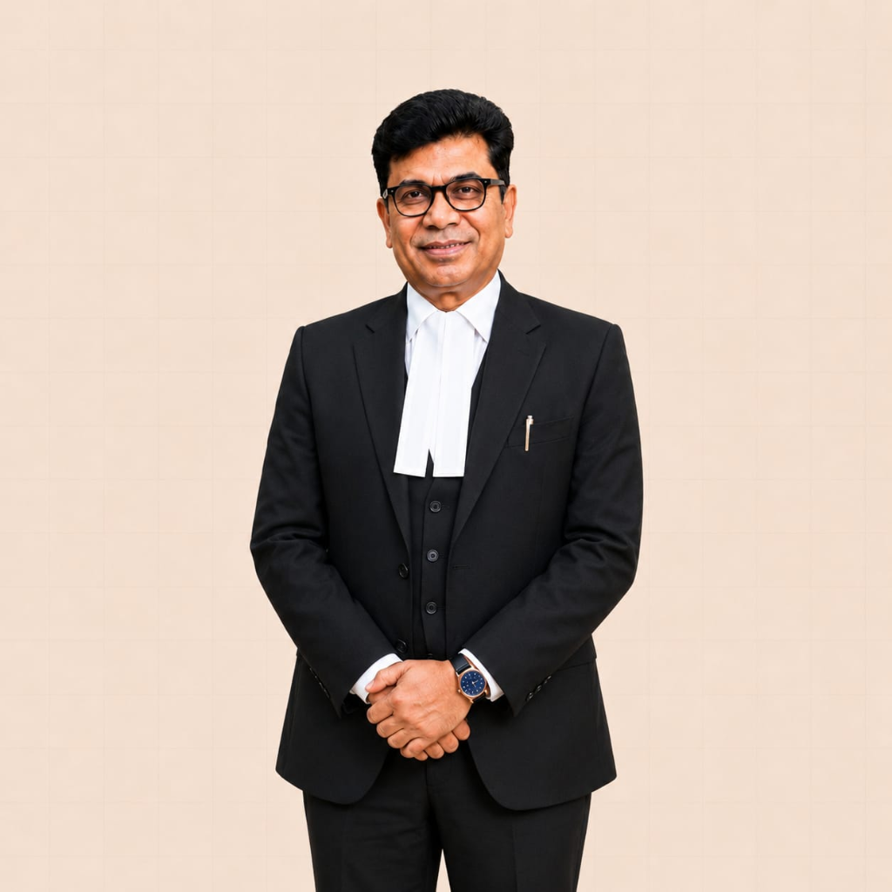

Advocate | Arbitrator | Author
Dr. Ashwinie
Kumar Bansal
Punjab and Haryana High Court Advocate | Arbitrator | Author
Founder & Managing Partner. Advocate at the Punjab and Haryana High Court with close to four decades of practice. Serves as Principal of AKB LEX, providing strategic counsel on complex commercial litigation and arbitration proceedings.

Practice
Commercial counsel & dispute resolution
Practice encompasses corporate, commercial, and arbitration matters including construction, procurement, infrastructure contracts, project-related disputes, EPC and works contract claims, and high-value corporate conflicts.
Arbitration
Representation throughout proceedings
Advises and represents parties in proceedings under the Arbitration and Conciliation Act, 1996: jurisdictional challenges, Section 34 petitions to set aside awards, execution under Section 36, and Section 37 appeals.
Publications
Author on Indian arbitration law
He has published 8 books on Indian arbitration law which are used as textbooks at UILS, Punjab University.
Explore books and publicationsPublic service & appointments
Committee service and international arbitration
Dr. Bansal has served on the Law Ministry's Committee for Drafting the Arbitration and Conciliation Bill, 1995, and has been appointed as arbitrator by the World Intellectual Property Organization (WIPO), Geneva, for international domain name and intellectual property disputes.
No information matched your search.